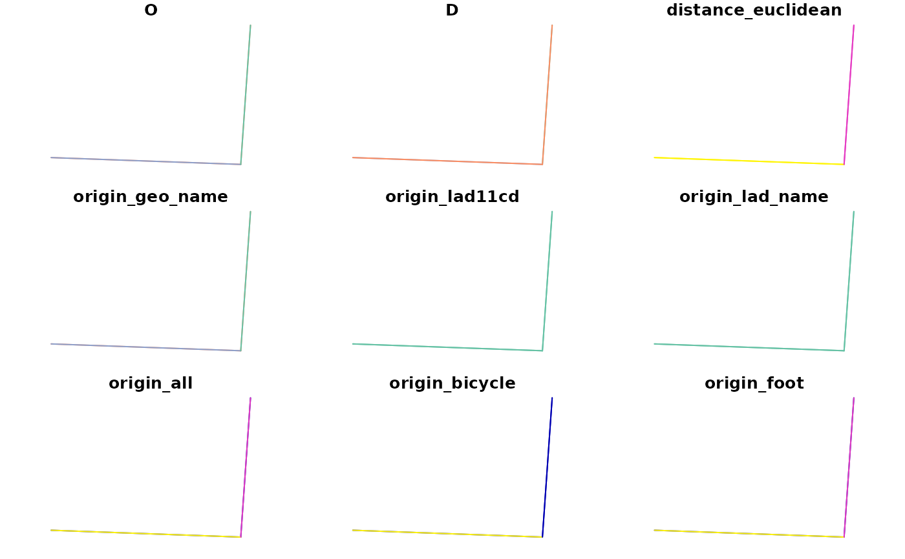
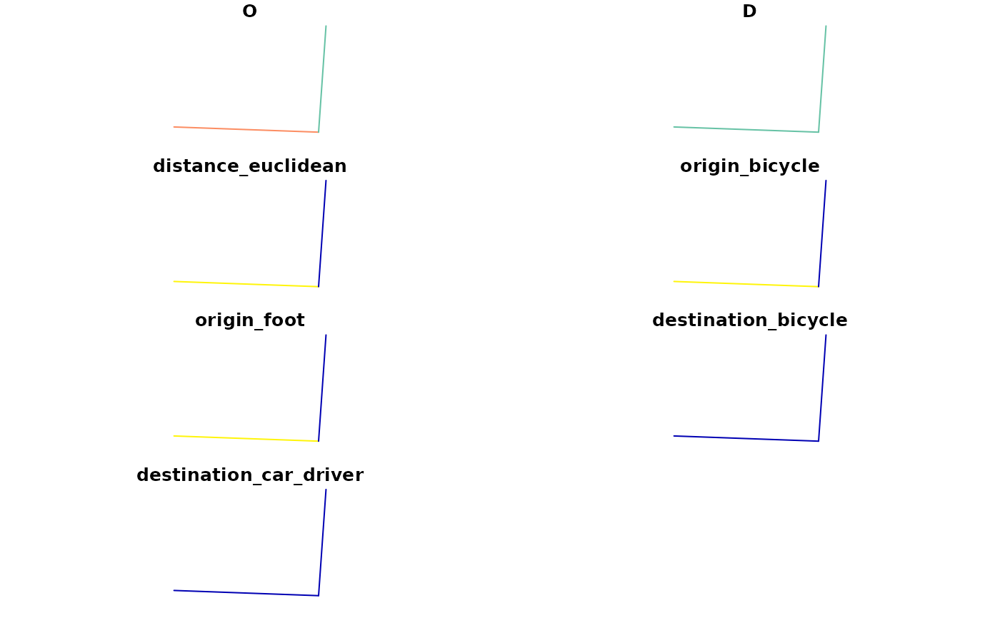
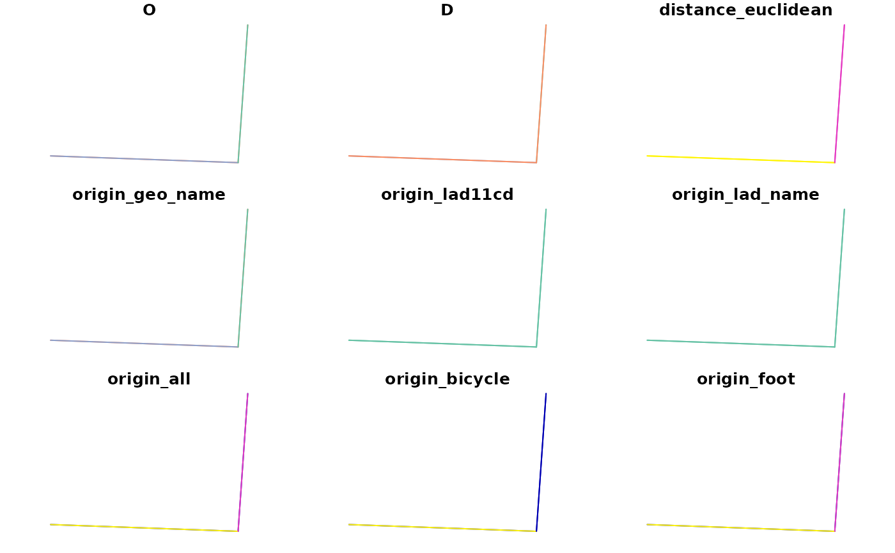
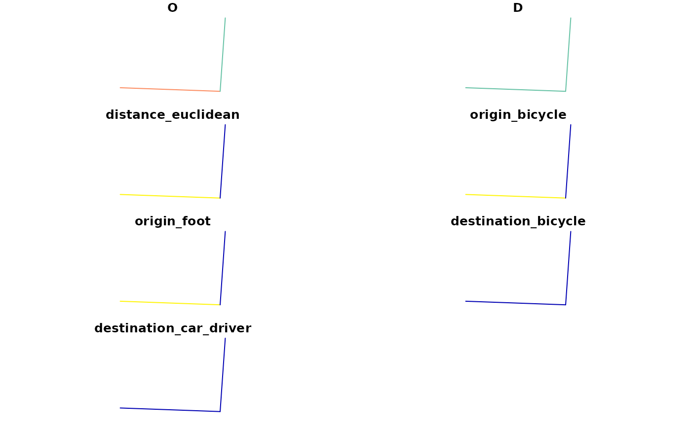

Prepares an OD data frame that next could be used to estimate movement between origins and destinations with a spatial interaction model.
Arguments
- origins
sfobject representing origin locations/zones- destinations
sfobject representing destination locations/zones- max_dist
Euclidean distance in meters (numeric). Only OD pairs that are this distance apart or less will be returned and therefore included in the SIM.
- intrazonal
Include intrazonal OD pairs? Intrazonal OD pairs represent movement from one place in a zone to another place in the same zone.
TRUEby default.
Details
In most origin-destination datasets the spatial entities that constitute
origins (typically administrative zones) also represent destinations.
In this 'unipartite' case origins and destinations should be passed
the same object, an sf data frame representing administrative zones.
'Bipartite' datasets, by contrast, represent "spatial interaction systems where origins cannot act as destinations and vice versa" (Hasova et al. 2022).
a different
sf object can be passed to the destinations argument.
Examples
library(sf)
#> Linking to GEOS 3.10.2, GDAL 3.4.1, PROJ 8.2.1; sf_use_s2() is TRUE
origins = si_centroids[c(1, 2, 99), ]
destinations = origins
plot(origins$geometry)
 odsf = si_to_od(origins, destinations, max_dist = 1200)
#> lon-lat points
plot(odsf)
#> Warning: plotting the first 9 out of 27 attributes; use max.plot = 27 to plot all

# note: result contains intrazonal flows represented by linestrings
# with a length of 0, e.g.:
sf::st_coordinates(odsf$geometry[1])
#> X Y L1
#> [1,] -1.501878 53.81544 1
#> [2,] -1.501878 53.81544 1
# With different destinations compared with origins
library(sf)
origins = si_centroids[c(2, 99), c(1, 6, 7)]
destinations = si_centroids[1, c(1, 6, 8)]
odsf = si_to_od(origins, destinations)
nrow(odsf) # no intrazonal flows
#> [1] 2
plot(odsf)

odsf = si_to_od(origins, destinations, max_dist = 1200)
#> lon-lat points
plot(odsf)
#> Warning: plotting the first 9 out of 27 attributes; use max.plot = 27 to plot all

# note: result contains intrazonal flows represented by linestrings
# with a length of 0, e.g.:
sf::st_coordinates(odsf$geometry[1])
#> X Y L1
#> [1,] -1.501878 53.81544 1
#> [2,] -1.501878 53.81544 1
# With different destinations compared with origins
library(sf)
origins = si_centroids[c(2, 99), c(1, 6, 7)]
destinations = si_centroids[1, c(1, 6, 8)]
odsf = si_to_od(origins, destinations)
nrow(odsf) # no intrazonal flows
#> [1] 2
plot(odsf)
